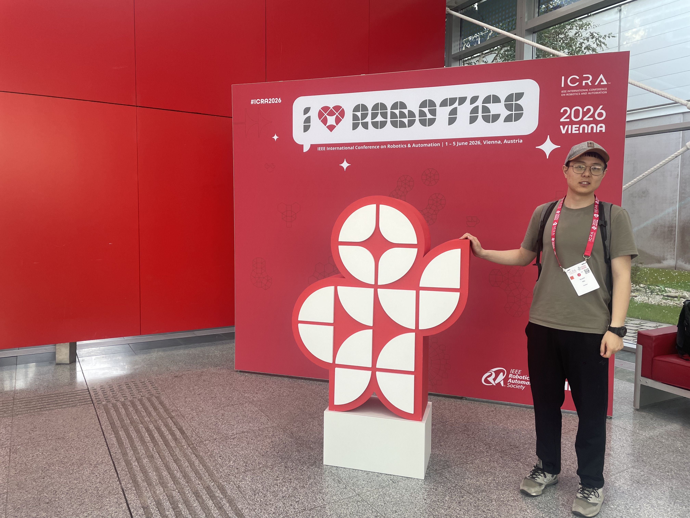
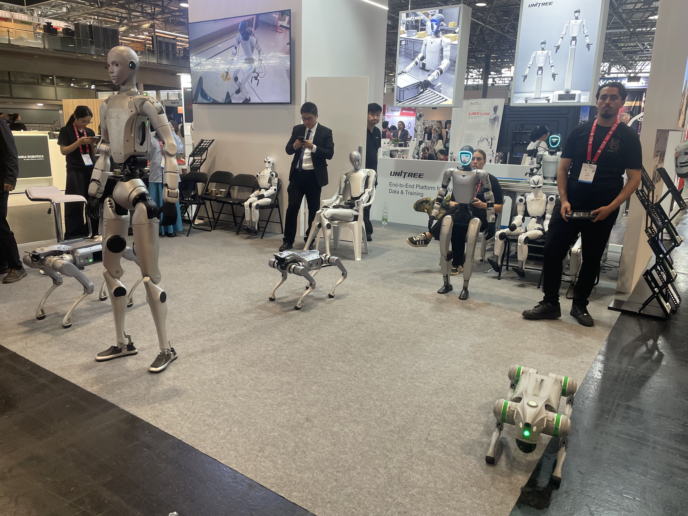
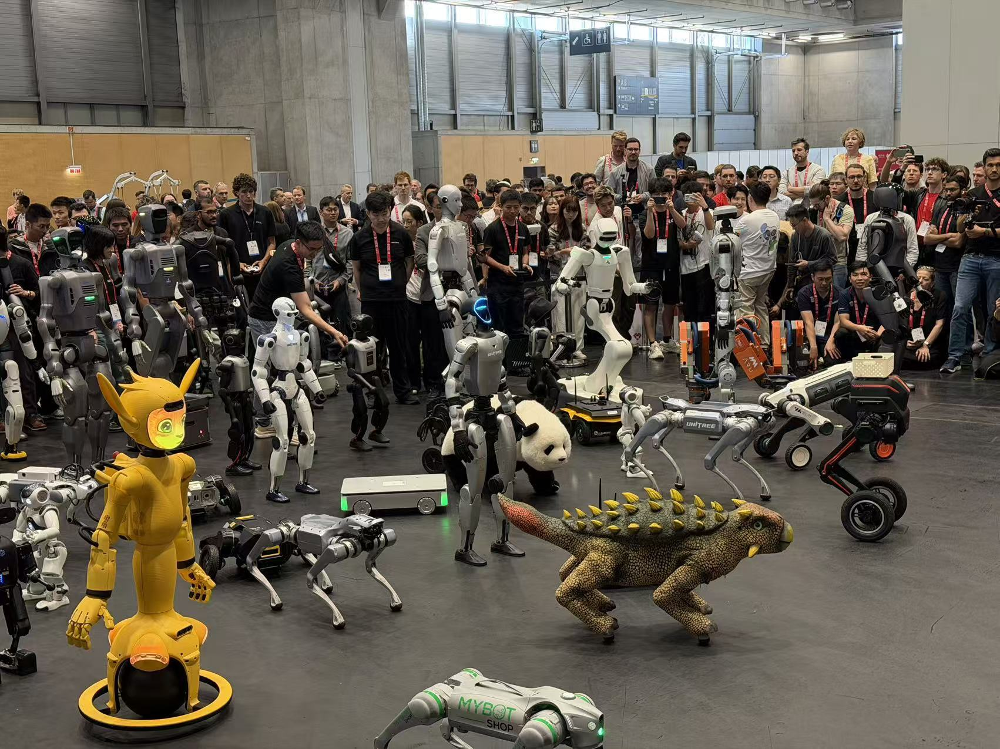
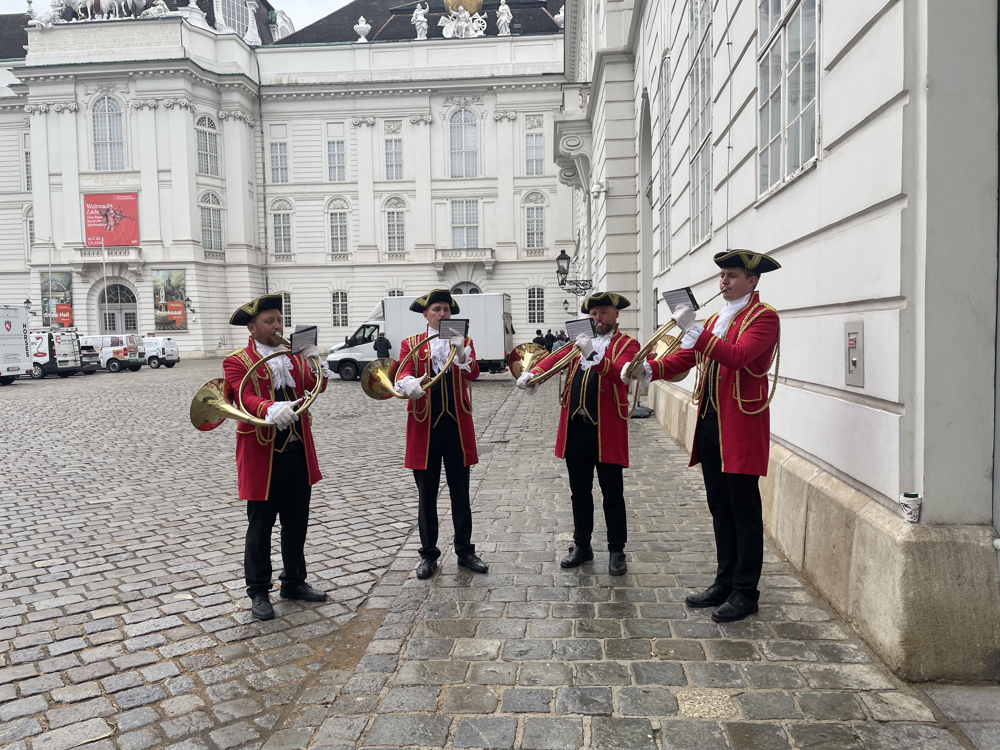
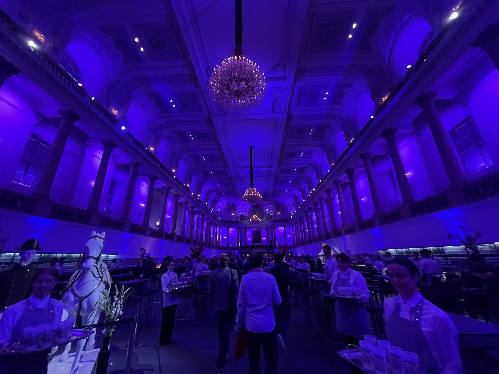
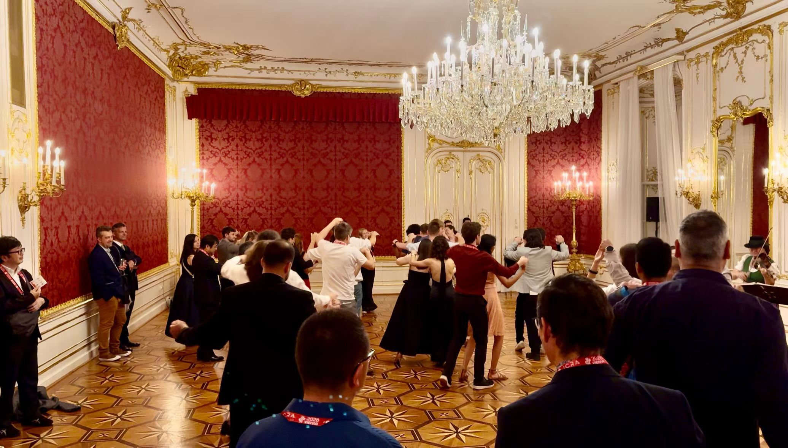
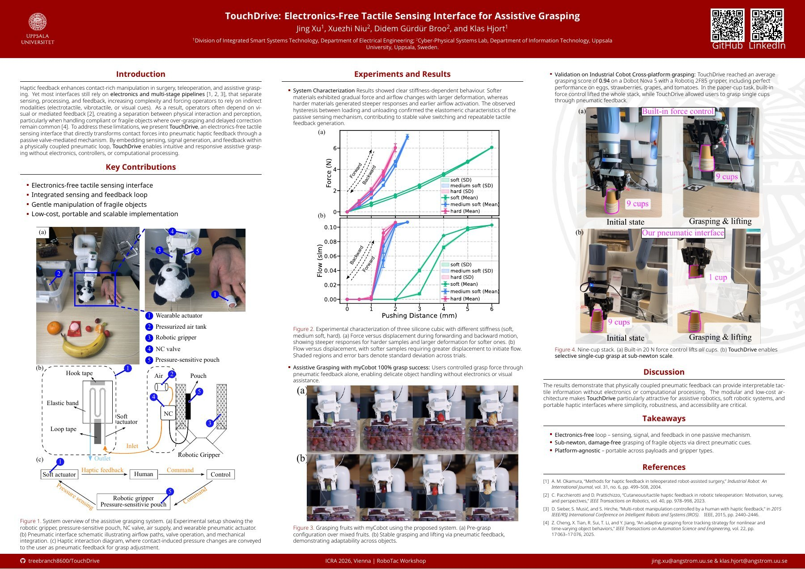
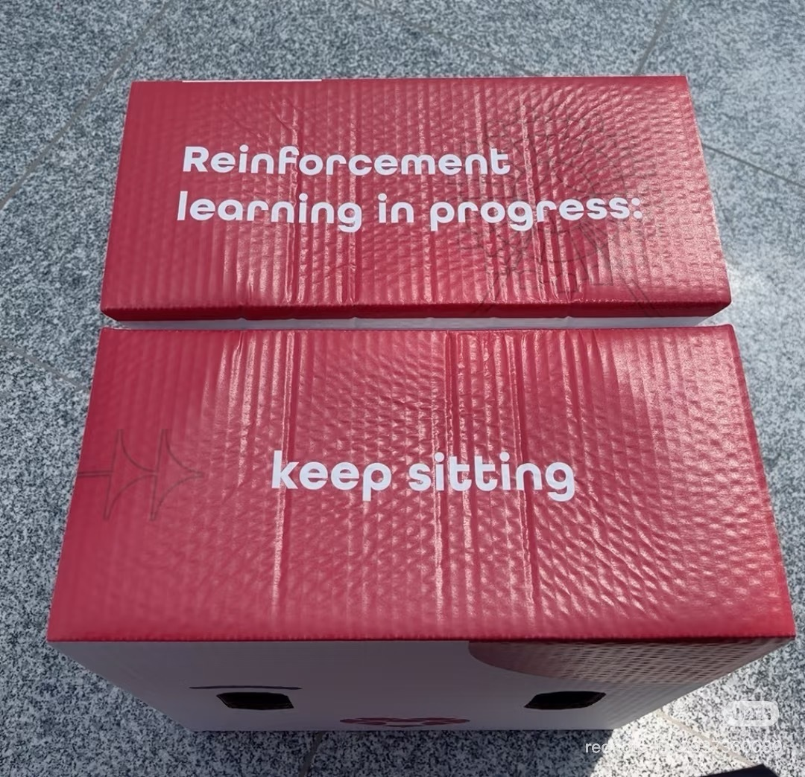
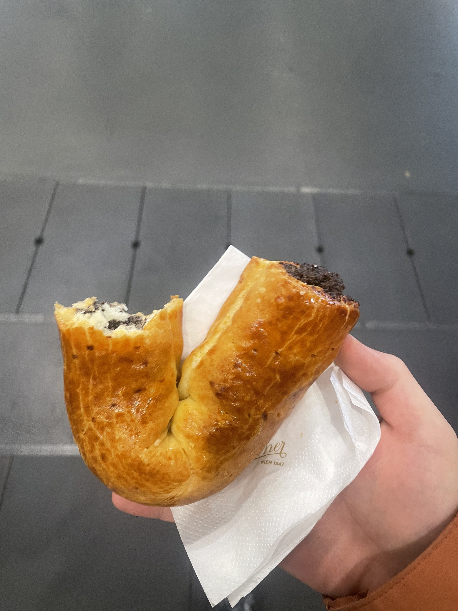

ICRA 2026 in Vienna: Robots, RoboTac, and a Week to Remember
Post's content provided by: CPS-Lab Team
- When:
1–5 June 2026 - Where:
VIECON, Vienna, Austria - Workshop:
RoboTac, 5 June 2026
This June, CPS-Lab traded Uppsala for Vienna and joined ICRA 2026. For five busy days, the conference halls were packed with talks, demonstrations, old friends, new collaborators—and seemingly every kind of robot that can roll, walk, grasp, dance, or play football. Yes, we were there with a workshop paper, but this recap is less about plots and more about everything that made the week memorable.

Robots in every direction
ICRA is one of those rare places where walking between sessions becomes an event of its own. Around every corner there was another live demonstration, a new machine to inspect, or a crowd forming around something unexpected. We met humanoids and quadrupeds, watched robot football, and saw an impressively varied robot parade take over the exhibition floor.


Vienna after hours
On Wednesday evening, laptops gave way to chandeliers at ICRA's Imperial Night at the Hofburg Palace and Spanish Riding School. Between live music, Austrian food, conversation, and a little dancing, Vienna made sure the social programme was every bit as memorable as the technical one.



A short research interlude: TouchDrive at RoboTac
On Friday, 5 June, we rounded out the week at RoboTac 2026, ICRA's full-day workshop on tactile perception and manipulation. Our contribution was the workshop paper TouchDrive: Electronics-Free Tactile Sensing Interface for Assistive Grasping. In one sentence: TouchDrive uses a passive pneumatic interface to turn contact at a robot gripper into feedback a person can feel, helping with the gentle grasping of delicate objects.
TouchDrive: Electronics-Free Tactile Sensing Interface for Assistive Grasping
Authors: Jing Xu, Xuezhi Niu, Didem Gürdür Broo, and Klas Hjort
A heartfelt thank-you to all of the paper's authors for the work behind TouchDrive and for making our RoboTac contribution possible. This workshop paper was a true collaborative effort, and we are grateful to every author who helped bring it to Vienna.

Conference souvenirs, the unofficial kind
Alongside research notes and new ideas, our camera roll came home with a few small reminders of the week: a perfectly on-theme place to sit, and one final Viennese pastry before the trip home.


Until next time
We left Vienna with fresh ideas, new connections, full camera rolls, and a renewed appreciation for how much fun the robotics community can fit into five days. Thank you to the ICRA and RoboTac organisers, everyone who stopped to talk with us, and all the colleagues and friends who made the week such a good one. See you at the next conference!
Photo and video credit: CPS-Lab team archive